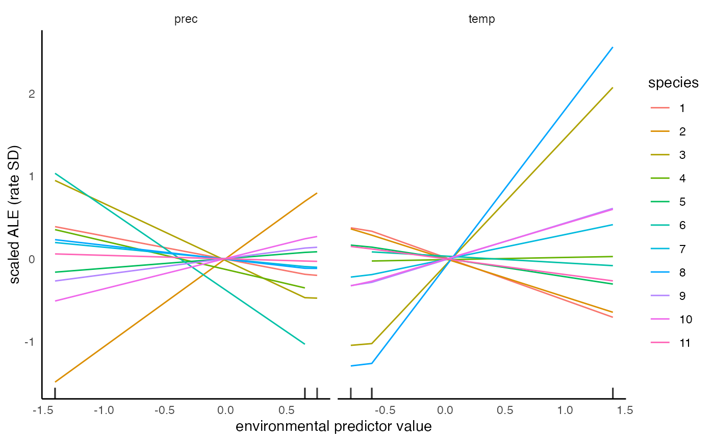

Calculates accumulated local effects (ALE) for the three processes
Usage
ALE(
model,
env = NULL,
init_cohort = NULL,
env_autoscale = TRUE,
sim_seed = 42L,
plot = TRUE,
process = NULL,
scale = FALSE,
...
)Arguments
- model
(
finn_class)
Model object of classfinn_class.- env
(
data.table|data.frame)
Environmental covariates for which the ALE should be calculated. IfNULL(default) the trainingenvcached byfit()is used.- init_cohort
(
CohortMat)
Initial cohort of classCohortMat. IfNULL(default) the training init_cohort cached byfit()is used (or bare ground if none was cached).- env_autoscale
(
logical(1))
IfTRUE(default)envis assumed to be on the raw (unscaled) scale and the model's storedenv_scalingis applied internally before the effects are computed, mirroring how the model was fitted (seefit()'senv_autoscale). SetFALSEifenvis already on the model scale, or for a model fitted without autoscaling.- sim_seed
(
integer(1))
Seed applied viaFINN.seed()before the state-harvesting simulation, so the (stochastic) conditional effects / ALE are reproducible and cacheable.NULLdisables seeding.- plot
(
logical(1))
IfTRUE(default) an ALE plot is drawn viaplot.FINNale()(rows = processes, columns = environmental predictors, one coloured line per species).- process
(
character|NULL)
If given (one of"growth","mortality","regeneration") only that process is plotted.NULL(default) plots all three.- scale
(
logical(1))
Only for the plot (plot = TRUE): ifTRUEeach drawn curve is divided by the SD of its process x species rate, yielding dimensionless, comparable effects (the curve's variance then equals the Sobol-style normalised importance). The returned tables are not changed; they carry the SD asrate_sd. DefaultFALSE.- ...
Not supported yet.
Value
A list of class FINNale with one table per process ($growth,
$mortality, $regeneration). Each table gives the accumulated local
effect (ale, on the scale of the process rate) of every driver (var)
across its observed range (x), per species, and rate_sd, the SD of
that process x species rate. When plot = TRUE the effects are also drawn.
See also
plot.FINNale() to draw the curves, conditionalEffects() and
averageConditionalEffects() for the local slopes behind them,
summary.finn_class() and feature_importance() for variable importance
Examples
library(data.table)
#> Warning: package ‘data.table’ was built under R version 4.5.2
# a small model fitted on three Oregon FIA sites (?fia_obs_dt, ?fit); the NN
# variant is the same call with `hidden = c(10, 10)` on the process
sites <- 1:3
Nsp <- max(fia_obs_dt$species)
init <- makeInitCohorts(fia_init_trees[siteID %in% sites], Nspecies = Nsp)
FINN.seed(1)
m <- finn(
N_species = Nsp, recruits_dbh = 12.9,
growth_process = createProcess(~ temp + prec, FINN::growth,
optimizeSpecies = TRUE, optimizeEnv = TRUE),
mortality_process = createProcess(~ temp + prec, FINN::mortality,
optimizeSpecies = TRUE, optimizeEnv = TRUE),
regeneration_process = createProcess(~ temp + prec, FINN::regeneration,
optimizeSpecies = TRUE, optimizeEnv = TRUE))
fit(m, data = fia_obs_dt[siteID %in% sites], env = fia_env_dt[siteID %in% sites],
init_cohort = init, epochs = 2L, patches = 4, patch_size = 0.06, plot_progress = FALSE)
#> ℹ weights: intercept-only baseline x your vector (dbh=0.00243, ba=12, trees=0.968, growth=1.84e+04, mortality=38.5, regeneration=0.768)
#> ℹ share of the objective at the intercept-only baseline (scaled): dbh=17%, ba=17%, trees=17%, growth=17%, mortality=17%, regeneration=17%
# accumulated local effects of every driver, per process and species. `env` and
# `init_cohort` default to the ones fit() cached, so the curves are read over
# exactly the range the model was trained on.
ale <- ALE(m, plot = FALSE)
head(ale$growth)
#> x ale var species rate_sd
#> 1 12.90000 0.1380894 dbh 1 0.05420599
#> 2 13.95500 0.1303347 dbh 1 0.05420599
#> 3 14.34122 0.1286609 dbh 1 0.05420599
#> 4 14.68221 0.1271424 dbh 1 0.05420599
#> 5 15.18479 0.1242454 dbh 1 0.05420599
#> 6 15.35646 0.1233399 dbh 1 0.05420599
# the curves of one process, one panel per driver and one line per species;
# `scale = TRUE` divides each drawn curve by the SD of its process x species
# rate, so that the panels of different processes become comparable
ALE(m, process = "growth", scale = TRUE)
